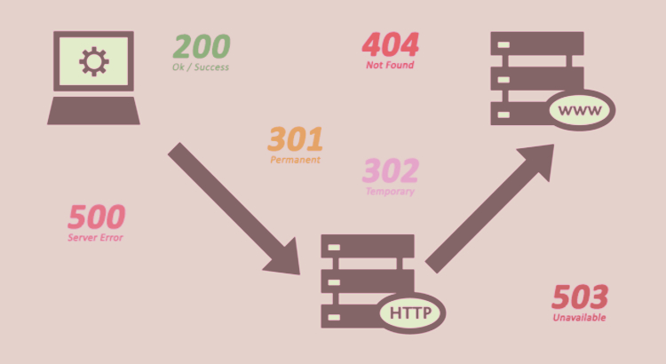

Mi nombre es Andrea Piñeiro Cavazos, estudio el 4° Semestre de la carrera "Ingeniería en Tecnologías Computacionales".
Me apasiona mucho la programación; es algo que descubrí al entrar a Universidad, pues antes no había tenido
acercamiento.
Actividades extraescolares:
- ¿Cuál es la diferencia entre Internet y la World Wide Web?
El internet es una red de computadoras conectadas entre sí alrededor de todo el mundo,
esta cuenta con muchos servicios que ofrecen conexión.
La World Wide Web (WEB) es una colección grande de páginas, esta funciona a través
del internet; y se pueden transmitir diversos tipos de datos a través de Protocolos.
La web no existe sin el Internet, pero en el Internet hay más que la web.
- ¿Cuáles son las partes de un URL?
- Protocolo HTTPS: sirve para transferir información dentro de la Web.
- Subdominio: va después del protocolo y antes del punto.
- Dominio: nombre único para identificar una página web y encontrarla con facilidad.
- TLD: dominio de nivel superior, tipo de página (.gob, .com, etc).
- Ruta: lo que va después de
/
, subpáginas y páginas de un sitio web.
- Parámetro: después del signo de interrogación, a veces se relacionan con una búsqueda,
parámetros de campañas publicitarias.
- Etiqueta: nos permiten hacer scroll hacia un elemento o parte de una página web,
aparece después del
#
.
- ¿Cuál es el propósito de los métodos HTTP: GET, HEAD, POST, PUT, PATCH, DELETE?
- GET: leer una representación de un recurso específico. Se usa para buscar y obtener datos en un formato concreto.
- HEAD: similar a GET pero no devuelve el contenido en el HTTP, manda el encabezado de la petición.
- POST: enviar datos al servidor. También se pueden usar con GET pero tiene limitaciones.
- PUT: actualizar contenidos.
- PATCH: actualizar contenidos, pero actualmente es más usado que PUT.
- DELETE: elimina un recurso específico.
- ¿Qué método HTTP se debe utilizar al enviar un formulario HTML, por ejemplo cuando ingresas tu usuario y contraseña en algún sitio? ¿Por qué?
POST, para enviar los datos del usuario al servidor.
- ¿Qué método HTTP se utiliza cuando a través de un navegador web se accede a una página a través de un URL?
GET, para recuperar los datos de la petición, obtener los datos de un recurso.
- Un servidor web devuelve una respuesta HTTP con código 200. ¿Qué significa esto? ¿Ocurrió algún error?
Significa que la operación fue exitosa, no hubo ningún error; la página cargo correctamente.
Los códigos que tengan el formato 2XX indican que la carga fue correcta.
- ¿Es responsabilidad del desarrollador corregir un sitio web si un usuario reporta que intentó acceder al sitio y se encontró con un error 404? ¿Por qué?
No, a menos que sea un link roto. Normalmente cuando aparece este error es porque el usuario quiso acceder a un recurso no disponible.
- ¿Es responsabilidad del desarrollador corregir un sitio web si un usuario reporta que intentó acceder al sitio y se encontró con un error 500? ¿Por qué?
Si es su responsabilidad, ya que este error se presenta cuando hubo un error al intentar acceder al servidor. 500 Internal Server Error.
Este mensaje indica que se ha producido un error en la conexión con el servidor y, por lo tanto, no se puede acceder a la página solicitada.

- ¿Qué significa que un atributo HTML5 esté depreciado o desaprobado (deprecated)? Menciona algunos elementos de HTML 4 que en HTML5 estén desaprobados.
Deprecated significa que su uso ya no es recomendado; sucede porque el estándar es
actualizado y algunas tags del lenguaje son eliminadas, agregadas o desaprobadas.
Elementos desaprobados en HTML5:
- basefont
- center
- applet
- acronym
- rev
- charset
- shape
- longdesc
- target
- nohref
- ¿Cuáles son las diferencias principales entre HTML 4 y HTML5?
- HTML5 es compatible con HTML4 y XHTML 1.0
- Sintaxis simplificada.
- Se introdujo el atributo meta para definir los caracteres que se usan.
- Se simplificó el DOCTYPE.
- Nuevos elementos como section, article, header, footer.
- Nuevos atributos como media, charset, autofocus, placeholder.
- Algunos elementos cambiaron como a, b, i, menú.
- Algunos atributos cambiaron como type, name, summary.
- Algunos elementos desaparecieron como basefont, big, center.
- Algunos atributos desaparecieron como align, background, bgcolor.
- ¿Qué componentes de estructura y estilo tiene una tabla?
| Componente |
Significado |
| < table > |
Define un contenedor para datos en forma de tabla. |
| < thead > |
Define un grupo de filas al inicio de una tabla. Encabezados |
| < tbody > |
Define un grupo de filas para la tabla. Contenido. |
| < tfoot > |
Define un grupo de filas al final de la tabla. |
| < tr > |
Define una fila de la tabla. |
| < td > |
Define una celda de la tabla, debe estar debajo de < tr > |
| < caption > |
Define el título de la tabla. |
- ¿Cuáles son los principales controles de una forma HTML5?
Controles principales:
- Button
- Label
- Legend
- Input
- ¿Qué tanto soporte HTML5 tiene el navegador que utilizas? Puedes utilizar
la siguiente página para descubrirlo: http://html5test.com/ (Al responder la pregunta
recuerda poner el navegador que utilizas)
Navegador: Google Chrome
Sobre el ciclo de vida de los sistemas de información:
- ¿Cuál es el ciclo de vida de los sistemas de información?
Un sistema de información está formado por la infraestructura, organización, personal y los componentes
necesarios para la recopilación, procesamiento, almacenamiento, transmisión, visualización y organización
de los datos.
El ciclo de vida de un sistema de información propone fases de análisis y diseño
que sostiene que los sistemas son mejor desarrollados con el uso de un ciclo especifico de actividades.
Etapas del ciclo de vida:
- Planificación: etapas previas.
- Análisis: ¿Qué es lo que se necesita?
- Diseño: Estructura general del sistema
- Implementación: Selecconar las herramientas y el entorno de nuestro sistema.
- Pruebas: Corroborar que el diseño cumple con los requisitos.
- Mantenimiento: Introducir los ajustes necesarios para mejorar el rendimiento y corregir
los problemas que puedan surgir.
- ¿Cuál es el ciclo de desarrollo de sistemas de información?
Es un proceso lógico para desarrollar un sistema de información.
Este ciclo incluye los requisitos, la validación, formación, así como los usuarios.
Hay una gran serie de sistemas de ciclo de vida de desarrollo, incluso incluyendo metodologías ágiles.
Etapas del ciclo de desarrollo:
- Planeación: etapas previas.
- Definición de requisitos: Lo que debe hacer el sistema.
- Diseño y Prototipado: Estructura del sistema y prototipos.
- Fase de desarrollo y pruebas: Comprobar el funcionamiento.
- Despliegue: Actividades que hacen que un sistema de software.
- Soporte: Mantenimiento que se le da a un sistema.
- Disposición: Estructura del sistema de información